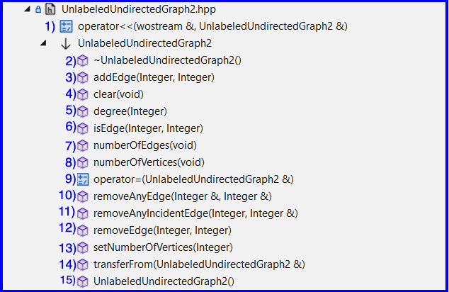
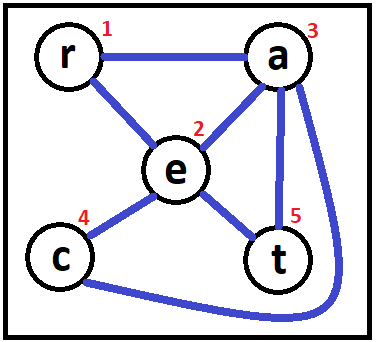
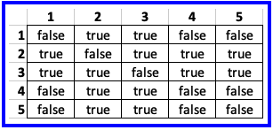

- 1) In the folder csse373devenv202330-yourID/components/include/UnlabeledUndirectedGraph create UnlabeledUndirectedGraph2.hpp
- 2) In UnlabeledUndirectedGraph2.hpp implement class UnlabeledUndirectedGraph2
- 3) You must:
- Implement UnlabeledUndirectedGraph2 using an adjacency matrix - see Figure 1 for an example
- Use a layered implementation by layering on the CeramicArray1 component and its corresponding CeramicArrayChecking1 component
- Implement all 15 methods - see Figure 2
- Use C++'s conditional compiliation and use CeramicArrayChecking1 in Debug Mode and only CeramicArray1 when in Release mode
- Define the correspondence as a comment in the
'private: // Representation' part
- Uncomment the
'private: // Disallowed QueueOfText Operations' part and change the code found there
so that it works with UnlabeledUndirectedGraph1
- For your implementation of UnlabeledUndirectedGraph2's operator <<,
I recommend that you use the implementation found in UnlabeledUndirectedGraph1.hpp
- You may want to use ProjM2's unit tests to test your implementation

Figure 2
|


Figure 1 - Graph g and its adjaceny matrix
|